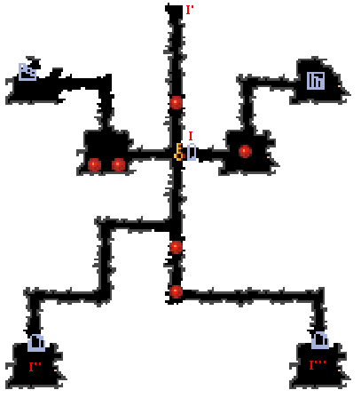

| 概要 | 情報 | アイテム一覧 |
| 敵キャラ一覧 | ステージ一覧 | 夢幻迷宮について |
| 攻略チャート | Zwei!! 攻略へ |
| ステージ選択へ |
ケノーピ火山 Lv.29
| A | A-A'間はトゲが移動しています。 ぶつからないようにしましょう。 |
B |
B、B'のボタンスイッチをONにすると、C、C'の扉が開きます。 ただし、B'のスイッチをONにすると敵が現れるので注意してください。 |
| D | D-D'間は、狭い通路上をトゲが低速で動いています。 よく見て通れば何ともありません。しかし、途中で敵が出てくるので注意してください。 |
| E | E、E'の宝箱を開けると、部屋に敵が現れます。 |
| F |
部屋FにあるボタンスイッチをONにすると、F-F'間にトゲが落ちてきます。 トゲよりも早くF'地点に行かないと、かなりのダメージを受けます。 また、F'地点にモンスターが現れるので、忘れず倒しておきましょう。 |
| G |
部屋GにあるボタンスイッチをONにすると、G'-G''地点にモンスターが現れます。 |
| H | H-H' 間にはコンロが仕掛けられています。 行きも帰りも敵が現れるので注意してください。 |
|  | |
| I | I地点の扉を開けるには、I'、I''、I'''地点にある風船を割らなければなりません。 また、I''、I'''地点の風船を割ると敵が現れるので注意してください。 |
| J | J-J'間、J''-J'''間はトゲが高速で移動しています。 何も対策をしていないと、間違いなくダメージを受けます。 |
| K | K-K'間をトゲが高速で移動しています。 何も対策をしていないと、間違いなくダメージを受けます。 |
| L | 部屋Lではトゲがぐるぐると回っています。 トゲに注意しながら、敵を倒してください。 |
| M | M地点の扉を開けるには、M'～M''''地点の風船を割らなければなりません。 しかし、各風船の前には大砲が置かれているので、爆弾で壊してしまいましょう。 |
| N | N地点にもツボがあります。コンロに注意しながら割ってください。 |
| ステージ選択へ |
| 概要 | 情報 | アイテム一覧 |
| 敵キャラ一覧 | ステージ一覧 | 夢幻迷宮について |
| 攻略チャート | Zwei!! 攻略へ |
Zwei!!
| 目次へ戻る | ページの上部へ |